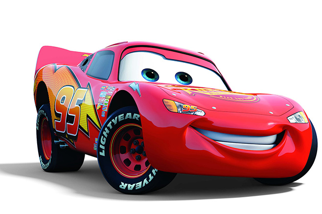
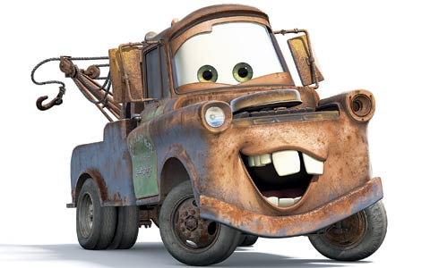

My Favorite Cars

History
While you might have thought I was going to be talking about my favorite cars, I in fact I'll be talking about my favorite characters from the movie "Cars." Below is list in no particular order of my favorite characters:
- Lightning McQueen
- Mater
- Luigi
- Sheriff
- Flo
- Fillmore
To see all of the "Cars" characters you can go HERE to find it.
You may be wondering to yourself, "Why is Mater bold, italicized, and red?" Because he is my favorite character of course! Who in their right mind wouldn't like the old 1951 International Harvester L-170 "boom" truck. Exactly no one would! Mater is that not so smart loveable character that makes you just care so much about them. If Mater were a real person the person I would pick to be them is absolutly Larry the Cable Guy because he isn't that smart but has that loveable personality.

Types of Cars
| Character |
Year |
Car |
| Mater |
1951 |
International Harvester |
| Lightning McQueen |
2006 |
Chevorlet Corvette |
| Lugi |
1959 |
Fiat 500 |
| Fillmore |
1960 |
VW Bus |
While there are two movies with a third on the way in 2017, as well as two spin-off movies the first movie will always have a place in my heart. The nostalgia it brings is like no other and only hope that Cars 3 will be more like the first and lest like the second.